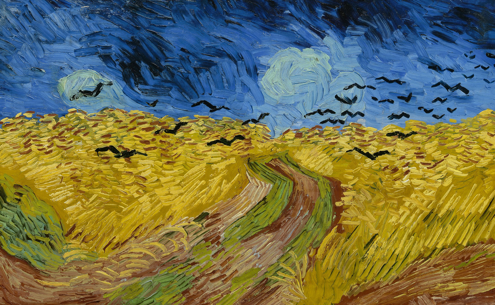

ANO 24 • • Nº 46

Porto Alegre | RS


Estas “Palavras do Presidente” marcam o fim da atual gestão...
Na contemporaneidade, a humanidade parece se encontrar mergulhada em situações...
De tempos em tempos, a humanidade parece mergulhar em novas incertezas...
Londres, hoje. Uma fila de crianças acompanhadas por seus pais aguarda...
Falta de tempo, tempo acelerado, tempos bicudos, tempo real...
A artista plástica Fayga Ostrower, em seu livro Criatividade e processos de criação...
O dia 15 de maio de 2025 foi de tristeza e de reconhecimento pela vida e obra...
Atividades interessantes marcaram o segundo semestre da Diretoria Científica...
Algumas vezes escutei, e seguramente também deve ter acontecido com todo psicanalista...
Nesta edição, destacam-se dois movimentos que buscam ampliar a proposta...
No segundo semestre de 2025, a Diretoria de Infância e Adolescência promoveu...
A SPPA sempre se faz representar junto ao comitê Mulheres e Psicanálise...
A reestreia nos cinemas brasileiros do clássico filme Paris...
O primeiro semestre de 2025 foi marcado pela realização, em junho,...
A Diretoria de Ações na Comunidade da Sociedade Psicanalítica de Porto Alegre...
Há muito tempo que a tradição do encontro para estudar psicanálise...